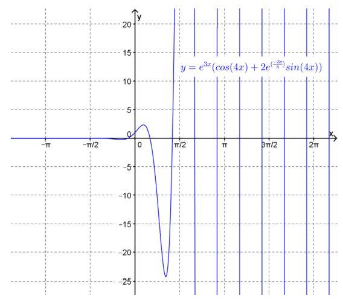

So far we have learnt how to find exact solutions to separable first order DEs and linear first order DEs. For other types of first order DEs finding exact solutions can become quite involved (or even impossible) and so instead we will turn our attention to second order DEs. Recall that a second order DE is one that involves the second derivative of the unknown function. As with first order DEs we can only find analytic methods for solving second order DEs for certain classes of such DEs.
The class of second order DEs that we are going to consider in this lecture is called the class of “homogeneous, second order, linear DEs with constant coefficients”. Let’s try to put this into some sort of context. Recall from Chapter 11 that a first order linear DE is a DE of the form:
As we have seen, this equation is called linear because it is the sum of terms that either don’t involve \(y\) or only involve \(y\) or its derivatives raised to the power of one 1 . Extending this idea to second order DEs gives the following definition.
What function has its second derivative zero (i.e. has zero curvature)? Clearly any linear function satisfies this property and so we guess that the general solution to this DE is
The solution, then, is any function that has its second derivative equal to the function itself. This is a property of any of the exponential functions
\begin{equation*}
y(x)=Ae^{x}.
\end{equation*}
It is also a property of the exponential functions
there are several things that we can predict about the solution, (based on Example 12.4 and previous lectures):
The general solution will be a family of functions involving two parameters.
The exponential function is a likely candidate for a solution.
Notice also that if both \(y_{1}(x) \) and \(y_{1}(x) \) are solutions to (12.1) then so will be \(y(x)=A y_{1}(x)+B y_{2}(x) \) where \(A \) and \(B \) are arbitrary constants. To see this, let \(y_{1}(x) \) and \(y_{2}(x) \) be solutions to (12.1), i.e.
where \(P(x)\neq 0, \) given any pair of solutions \(y_{1}(x) \) and \(y_{2}(x) \) that are not constant multiples of each other a general solution to the DE is
\begin{equation*}
y(x) = A y_{1}(x) + B y_{2}(x).
\end{equation*}
Note: The proof of this theorem is beyond the scope of this course.
Example12.6.
Given that \(y=e^{x},\; y=e^{-x}, \; y=\sinh(x), \text{ and } y=\cosh(x) \) are all solutions to the DE
From the above theorem, since none of these solutions are constant multiples of each other, any pair of them can be combined to form a general solution to the DE. Thus possible general solutions could be
\begin{align*}
y_{1}(x) \amp = A e^{x} + B e^{-x}, \\
y_{2}(x) \amp = A \sinh(x) + B \cosh(x), \\
y_{3}(x) \amp = A e^{x} + B \cosh(x).
\end{align*}
and so on.
Recall that a general solution to the DE contains every solution to the DE. For example consider the particular solution
This solution belongs to the general solution \(y_{2}(x) \) with \(A=2 \; \text{and}\; B=-3. \) It also belongs to the general solution \(y_{1}(x) \) with \(A=-\frac{1}{2} \; \text{and}\; B=-\frac{5}{2}. \) and to the general solution \(y_{3}(x) \) with \(A=2 \; \text{and}\; B=-5. \)
Thus, initially at least, our method for trying to find the solutions to (12.1) is to try to find two different exponential functions that satisfy the DE and then combine them to obtain a general solution. To this end, let
(12.3) is called the characteristic equation for a DE of the form of (12.1)).
If the characteristic equation (12.3)) has two real solutions (i.e. \(b^{2}-4ac>0 \)) then we are done since we will have found two solutions to (12.1) and, via the given theorem, we can combine these solutions to produce a general solution to (12.1). So if the solutions to the characteristic equation are \(r_{1} \) and \(r_{2} \) say, then the general solution to (12.1) is
The characteristic equation for this homogeneous second order linear DE with constant coefficients is
\begin{equation*}
r^{2}+3r+2=0
\end{equation*}
which has solutions
\begin{equation*}
r=-1,\; -2.
\end{equation*}
Thus the general solution to the DE is
\begin{equation*}
y(x)=A e^{-x} + B e^{-2 x}.
\end{equation*}
If the characteristic equation (12.3) has only one real solution (i.e. \(b^{2}-4ac=0\)) then we will have found only one exponential solution to (12.1) , i.e.
To find a general solution we have to find another solution (that is not a constant multiple (12.1)). It turns out that another solution to (12.3) can be found by trying a function of the form
Clearly \(f(x)=1 \) satisfies (12.6) but this just gives us solution (12.4). also satisfies (12.6) and gives us a solution that is not a constant multiple of (12.4). Thus a general solution to (12.1) will be
which are both real. We can check that functions are indeed solutions to (12.1) and so we have found two real solutions to (12.1) that aren’t constant multiples of each other. Thus, in the case that the characteristic equation has complex roots the general solution to the DE is
\begin{equation*}
y(x)=Ae^{\alpha x}\cos(\beta x) + B e^{\alpha x}\sin(\beta x).
\end{equation*}
Given that the general solution to a second order DE has two arbitrary constants in order to find a particular solution it is necessary to give two conditions. In an initial-value problem the conditions given are the values of \(y \) and \(y' \) at the same value of \(x \text{,}\) usually \(x=0. \) In a boundary-value problem the conditions given are the values of \(y \) at two different values of \(x. \) Even when we have a general solution to the DE, it may not always be possible to satisfy a given set of boundary-value conditions.
This solution is shown in Figure 12.12. Note that since \(r_{1}=-\frac{1}{4} < 0 \) the term in the general solution associated with this root (i.e. \(\frac{12}{5} e^{-\frac{x}{4}} \)) decays as \(x\to \infty. \) On the other hand since \(r_{2}=1 > 0 \) the term in the general solution associated with this root (i.e. \(\frac{3}{5} e^{x} \)) grows as \(x\to \infty. \)
This graph of this function is shown in Figure 12.14. Note that when the characteristic equation has complex roots, \(r=\alpha\pm\beta i\) the solutions the homogeneous second order linear DE with constant coefficients will be periodic in nature with frequency \(\beta\text{.}\) Further, if \(\alpha > 0\) then the oscillations will grow as \(x\to \infty \) whereas if \(\alpha < 0\) the oscillations will decay as \(x\to \infty. \) In this case \(\alpha =3\) and hence the oscillations increase in amplitude.

Figure12.14.
ExercisesExample Tasks
1.
If \(x=x(t) \) find the solution to the initial-value problem